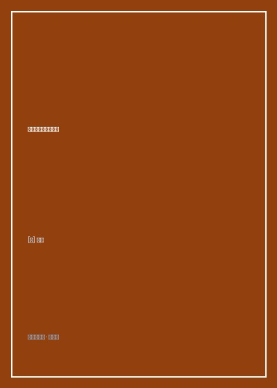

《经济学原理》

总体观点
《经济学原理》是现代经济学教育史上不可动摇的黄金教科书。曼昆开创性地将浩瀚庞杂的现代新古典经济学体系，凝练提炼为每一个现代公民都必须掌握的‘经济学十大原理’：从个人如何做出决策（权衡取舍、机会成本、边际考虑、激励反应），到人们如何相互交易（贸易创造价值、市场是组织经济活动的好方法、政府有时能改善市场结果），再到整体经济如何运转（生产率决定生活水平、货币超发导致通胀、通胀与失业的短期权衡）。
微观经济学（Microeconomics）的核心命题是‘供求关系与亚当·斯密看不见的手’。市场价格机制通过毫秒级的价格浮动，如同一个去中心化的超级计算机，自发协调着数以亿计自利的消费者与生产者的分散决策。消费者追求效用最大化，厂商追求利润最大化，两者在完全竞争市场的均衡价格处相交，实现了消费者剩余与生产者剩余之和（社会总福利）的最大化。当出现外部性（污染）或市场势力（垄断）导致市场失灵时，政府的庇古税或反垄断法介入才具备经济学正当性。
宏观经济学（Macroeconomics）则聚焦于国民产出（GDP）、通货膨胀与失业率的宏观波动周期。曼昆巧妙融合了古典长期的供给学派视野与凯恩斯主义短期的总需求总供给（AS-AD）波动框架：在长期中，一国人民生活水平的唯一决定因素是其工人每小时的‘生产率（Productivity）’；而在短期中，价格黏性使得货币政策（美联储利率调控）与财政政策能够有效平抑经济衰退与过度过热的经济周期震荡。
核心观点
-
1. 机会成本（Opportunity Cost）的决策眼光
做出一项选择的真实成本，是为了得到它所必须放弃的所有其他选项中的最高价值。传统会计只计算看得见的账面真金白银支出，而经济学要求将看不见的隐性机会成本全额计入考量。
比尔·盖茨从哈佛大学退学创业的决策：表面上退学省下了数十万美元学费，但其放弃的是哈佛文凭；而如果他留在哈佛读书，其付出的机会成本是放弃了创立微软垄断个人电脑操作系统的万亿美元时代机遇。 -
2. 边际思维（Marginal Thinking）与钻石与水的悖论
理性人在做决策时永远考虑‘边际变动’（多生产或多消费一个单位所带来的额外收益与额外成本：MR = MC）。水对生命至关重要但极度充沛，增加一杯水的边际效用极低；钻石对生存毫无用处但极度稀缺，多拥有一克拉钻石的边际效用极高，解释了价格为何由边际效用决定而非总效用。
一架即将起飞的跨国航班尚有十个空座：该航班平均每个座位的成本是500美元；当一名临时旅客愿出200美元买票登机时，航空公司应当毫不犹豫卖票，因为运送这名旅客的‘边际成本’仅仅是一份飞机餐与几滴航空燃油（不足20美元）。 -
3. 比较优势（Comparative Advantage）与自由贸易双赢
即使A国在生产所有商品上的绝对生产率都碾压B国，两国依然能通过专业化分工与自由贸易获得互利双赢。只要各自专注于生产自身‘机会成本相对最低’的商品，两国的总消费可能性曲线就能神奇突破各自国内的生产可能性边界（PPF）。
一位超级高薪的顶尖外科手术医生（时薪一千美元），即使他打字速度是全城秘书的两倍，他也应当雇佣一名时薪二十美元的秘书替自己整理病历，因为他打字一小时的机会成本是一千美元，专注于手术能为社会和自身创造更大价值。 -
4. 价格管制的灾难性无谓损失（Deadweight Loss）
政府出于善良愿望强行干预市场价格往往适得其反。规定房租上限（价格上限）导致房东不愿维护修缮房屋且转租黑市丛生，造成严重的住房短缺；规定最低工资（价格下限）虽然提高了在岗工人工资，却直接剥夺了技能最低的年轻底层工人的就业机会引发失业。
剖析二战后巴黎与纽约推行战时房租管制法规的后果：房东由于租金入不敷出任由房屋破败坍塌，经济学家阿萨尔·林德贝克惊呼‘除了轰炸机空袭，房租管制是摧毁一座城市最有效的方法’。 -
5. 通货膨胀在任何时候都是一种货币现象
正如弗里德曼所言，持续的物价总水平飞涨，其唯一的根本原因就是政府或中央银行开动印钞机过度发行了货币。当货币供应量的增长速度远超实体商品和劳务的产出增长时，单位货币的购买力必然断崖下跌。
还原1923年德国魏玛共和国恶性通货膨胀现场：人们用手推车推着成捆的马克纸币去买一个面包，工人们每天领两次薪水立刻飞奔到杂货店抢购食品，因为下午的面包价格就会翻倍。
全书结构
-
第一篇 导言：经济学十大原理与像经济学家一样思考
奠定全书纲领，推导个人决策四原理、人际交易三原理与整体运转三原理，引入循环流量图与生产可能性边界（PPF）模型。
以大炮与黄油的生产可能性曲线为例，直观演示技术进步如何推动整个社会的资源约束边界向外扩张。 -
第二篇 市场如何运行：供给、需求与弹性
深入微观市场核心，推导需求定理、供给定理、均衡价格决定机制，详解需求价格弹性/交叉弹性以及政府租金管制与税收归宿分析。
演示对香烟征税案例：由于烟民对尼古丁的需求缺乏弹性，无论政府在法理上向买方还是卖方征税，税收负担最终绝大部分全被吸烟者承担。 -
第三篇 消费者、生产者与市场效率：福利经济学
引入消费者剩余（CS）与生产者剩余（PS），证明完全竞争市场达到均衡时社会总剩余最大化，解析国际贸易壁垒的无谓损失。
用严谨的几何图形推导进口关税对国内消费者的剥夺与净经济福利无谓损失（死重损失），从数理上证明全球自由贸易的优越性。 -
第四篇 公共部门与市场失灵：外部性与公共物品
攻克市场机制的盲区，分析负外部性（污染）与正外部性（教育）、科斯定理产权交易，以及搭便车公地悲剧（Tragedy of the Commons）。
以中世纪英国公有草场过度放牧导致寸草不生为例，演示明确界定排他性私有产权如何从根本上化解公地悲剧。 -
第五篇 企业的生产成本与四大市场结构
全景解构固定成本、可变成本、边际成本曲线（MC）与平均总成本（ATC）U型曲线，详述完全竞争、垄断、垄断竞争与寡头博弈（囚徒困境）。
以欧佩克（OPEC）石油输出国卡特尔产量协议为例，用纳什均衡博弈矩阵解释为什么各成员国总是忍不住背叛限产偷偷增产。 -
第六篇 宏观经济学的数据与长期经济运行
跃迁至宏观视野，定义GDP四部项（C+I+G+NX）、真实与名义GDP、CPI通胀衡量、长期经济增长生产率决定论与可贷资金市场模型。
对比美日德与非洲穷国在过去一个世纪的人均实际GDP复合增长率差异，证明每年仅仅1%的增长率差距在复利下一个世纪能拉开数倍贫富差距。 -
第七篇 短期经济波动：总需求总供给与宏观政策
总结全书，系统建构AS-AD模型与流动性偏好理论，解析美联储公开市场操作与财政刺激乘数效应，探讨菲利普斯曲线在短期的权衡。
深入剖析2008年次贷危机后美联储推行量化宽松（QE）与联邦政府减税基建法案，演示宏观政策如何双管齐下防止大萧条历史重演。